The web administration portal of GaBayan, the citizen guide app of the City Government of Biñan, Laguna. This document covers its features, architecture, data, security and upkeep.
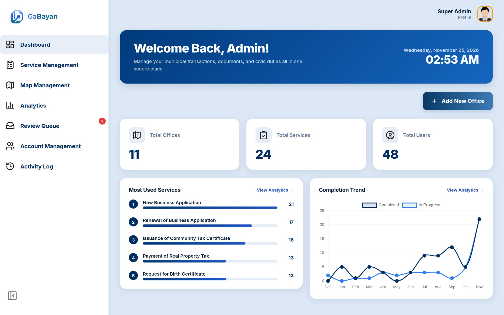
RepositoryDocsEase-Admin
BranchEnguerra · commit
Firebase projectdocsease-efacc
PreparedNovember 25, 2026
About this document
This document explains the GaBayan admin panel from every angle: what it is for, how each screen is used, how it is built, where its data lives, how it is secured and how to keep it running.
Who should read which part
If you are…
Start with
An office admin or the Super Admin using the panel
(Introduction), (Using the Admin Panel) and (Roles and Permissions)
A developer joining the project
(Getting Started), then to (frontend, Cloud Functions, data model, workflows)
Reviewing security or preparing a deployment
(Security) and (Deploying)
Fixing a problem or making a change
(Maintenance and Troubleshooting) and the appendices
How to find your way around
Contents. Every entry in the Contents, List of Figures and List of Tables is a link. Click it to jump to that page.
Bookmarks. Open your PDF viewer's bookmarks (outline) panel to browse chapters and sections at any time.
Numbering. Sections, figures and tables are numbered by chapter: Figure 3.4 is the fourth figure of Chapter 3, and Section 6.2 is the second section of Chapter 6. Numbers in the text, such as , are links too.
Who can do it. Labels show which role a feature is for: Super AdminOffice AdminAll admins. Server-side parts are marked Server and parts owned by the mobile app Mobile app.
Conventions
Words on the screen, such as buttons, tabs and menu items, are written in bold blue.
File names, Firestore fields and commands are written in monospace, for example public/js/shell.js or admin/{uid}.status. In paths, {uid} stands for a real ID.
Note
Background that helps you understand.
Tip
A quicker or safer way to do something.
Important
Affects real users or cannot be undone.
About the screenshots
The screenshots come from the panel running against the local Firebase emulators, filled with sample data by docs/source/tools/seed-emulator.cjs. All names, e-mail addresses and numbers in them are made up, so real lists and counts will differ. explains how to retake them and rebuild this PDF.
Contents
List of Figures
List of Tables
Introduction
GaBayan helps the citizens of Biñan get government documents and services right the first time. This chapter explains what the system is, who uses it, what the admin panel is for and how its parts fit together.
What GaBayan is
GaBayan is a citizen guide system for the City Government of Biñan, Laguna. Citizens use the GaBayan mobile app to look up the city's services. For each one it shows what to bring, which steps to follow, how much it costs, how long it takes and where to go inside City Hall. City staff keep that information correct and up to date in the GaBayan admin panel, the web application this document describes.
Both applications use the same Firebase project, docsease-efacc. A service saved in the admin panel reaches the mobile app right away, and what citizens do in the app (signing up, tracking a service) appears in the panel's dashboards.
For citizensGaBayan mobile app (Flutter): service guides, progress tracking, notifications, an assistant chatbot, text-to-speech, Filipino translations and indoor navigation on the first floor of City Hall.
For city staffGaBayan admin panel (web): offices and services, the first-floor map, account approvals, deleted records, user accounts, analytics and an activity log.
Shared backendFirebase Authentication, Cloud Firestore and Cloud Functions in project docsease-efacc, region asia-southeast1 (Singapore).
Note
The repositories still use the project's first name, DocsEase: DocsEase-Admin holds this panel and DocsEase-MobileApplication holds the app. Users only ever see the name GaBayan. The service information comes from the 2026 Citizen's Charter (1st Edition) of the City Government of Biñan. A copy is kept in docs/.
Who uses it
The three kinds of users
User
Uses
What they do
Citizen
Mobile app
Signs up in the app, browses offices and services, ticks off requirements and steps (service history), receives notifications, asks the chatbot and follows in-building navigation.
Office Admin
Admin panel role admin
Staff of one office. Adds and edits the services of their own office, sees that office's numbers and asks the Super Admin to delete a service. Their office is set when they sign up.
Super Admin
Admin panel role super_admin
Runs the whole system: offices and rooms, the first-floor map, every service, account approvals, deletion requests, Deleted Records, citizen and admin accounts, and analytics for all offices.
Admins are linked to their office by name: the office written on the admin's record (admin_office) must match the office's name (office_name). explains how renaming an office keeps the two in step.
What the admin panel does
Pages of the admin panel
Page
What you do there
Who
Sign In / Sign Up
Sign in with e-mail or Google, request a new admin account, reset a forgotten password.
Everyone
Dashboard
Key numbers, most-used services and the completion trend. Shortcut to add an office or a service.
All admins
Service Management
Super Admin: every office as a tile; add or delete offices. Office admin: goes straight to their office.
All admins
Office Services, Add / Edit Service
The services of one office, and the editor for a service's channels, requirements and steps.
All admins
Map Management
Place offices and rooms on the first-floor plan; edit their details and names.
Super Admin
Analytics
Citizen sign-ups, services per office, most-used services and completion trends.
All admins office admins: own office
Review Queue
Approve or decline requests, see completed requests, recover or permanently delete Deleted Records.
Super Admin
Account Management
Citizen and admin accounts with their status; deactivate and reactivate them.
Super Admin
Activity Log
A personal, live list of what happened (services added, requests answered, accounts changed).
All admins
Profile menu
Change your name and avatar, delete your own account, sign out.
All admins
System at a glance
shows the moving parts. Both apps talk to Firebase directly for sign-in and most data. Anything that needs special rights or heavy reading goes through Cloud Functions, for example changing another person's account, permanent deletes or counting statistics.
System architecture: two apps, one Firebase project, and the outside services they use
Browser → Firebase. The panel signs in with Firebase Authentication and reads and writes Firestore directly: offices, services, requests and the activity log. Lists on screen update live.
Browser → Cloud Functions. Actions that need server rights go through one callable function, adminApi: account status, logins, the trash, renames and statistics. adminAuth handles the forgot-password codes.
Triggers. Firestore triggers react to writes. They give new admins their claim, notify citizens about new or changed services and offices, and bump the version numbers used for caching.
Mobile app. The app has its own Cloud Functions (codebase default). They translate services to Filipino and send push notifications for the notifications the admin triggers create.
Technology stack
Technologies used by the admin panel
Area
Technology
Notes
User interface
HTML, CSS and JavaScript ES modules; no framework, no build step
The browser loads public/ as-is. Sidebar and top bar are custom elements.
Typeface
Inter (self-hosted woff2)
Served from public/assets/fonts; no Google Fonts request.
Firebase web SDK
10.8.1, loaded from www.gstatic.com
Version pinned in public/js/core/sdk/*.js.
Charts
Chart.js 4.4.3 from jsDelivr
Loaded only when a chart is drawn, checked with Subresource Integrity.
https://gabayan-admin-portal-m4q9.vercel.app. Vercel deploys it from main.
Local test project
demo-gabayan: Firebase emulators only, never real data ().
Getting Started
For developers: what to install, how the repository is organised, how to run the panel against the real project or against safe sample data, and how to deploy.
Prerequisites
Git and Node.js 22 with npm. The functions run on the Node.js 22 runtime.
Firebase CLI: npm install -g firebase-tools, then firebase login with an account that can access docsease-efacc.
Java 21 or newer for the Firebase emulators (Firebase CLI 14 and later). With Java 17, run the emulators with npx firebase-tools@13.
A static web server: VS Code Live Server, or Python's http.server.
Google Chrome, which is also needed to rebuild this document.
Project structure
DocsEase-Admin/
├── public/ the website, served as-is (no build step)
│ ├── *.html one page each: login, dashboard, analytics, review-queue, …
│ ├── css/app.css shared styles → base/ (tokens, reset, layout, fonts) + components/
│ ├── css/pages/ styles used by one page only
│ ├── js/shell.js sidebar + top bar (custom elements) and the menu (NAV)
│ ├── js/core/ Firebase setup, session and access rules, API client, cache, helpers
│ ├── js/data/ every Firestore query, one file per collection
│ ├── js/components/ dialogs, toasts, office form, service editor, floor plan, charts…
│ ├── js/pages/ one module per page
│ ├── assets/ icons, avatars, floor plan image, fonts
│ ├── tools/ one-off maintenance scripts run from the console (not deployed)
│ └── vercel.json security headers when Vercel serves public/
├── functions/ Cloud Functions, codebase "admin" (asia-southeast1)
│ ├── index.js exports only
│ └── src/ api/ · auth-recovery.js · lib/ · triggers/ · scheduled/
├── docs/ Citizen's Charter PDF, consultation notes, this documentation
│ └── source/ how this PDF is built (HTML, screenshots, scripts)
├── firebase.json hosting headers, functions codebase, emulator ports
├── firestore.indexes.json index settings for the services collection group
└── vercel.json security headers (Vercel, repository-root copy)
describes every file in one line.
Running the panel locally
The panel is static files, so any web server works:
cd public
python3 -m http.server 5510
Open http://localhost:5510/login.html. This uses the real Firebase project.
Important
Anything done this way affects real people. Saving a service notifies every citizen, accepting a request sends e-mails, and deleting is real. For experiments, use the emulators in the next section.
Running with the emulators and sample data
The Firebase emulators run Authentication, Firestore and the admin functions on your computer under the demo project demo-gabayan, so nothing touches production.
Install the function dependencies once: cd functions && npm ci
Start the emulators from the repository root: firebase emulators:start --only auth,firestore,functions --project demo-gabayan
Optional, load the sample data used for the screenshots: node docs/source/tools/seed-emulator.cjs
Serve public/ (previous section) and open http://localhost:5510/login.html?emulators
Sample accounts created by the seed script
Account
E-mail
Password
Super Admin
superadmin@gabayan.test
GaBayan#2026
Office Admin (Business Permits and Licensing Office)
maria.santos@gabayan.test
GaBayan#2026
The ?emulators flag is remembered for the browser tab (sessionStorage) and only works on localhost or 127.0.0.1. A new tab needs the flag again.
Recovery codes are printed in the emulator log instead of being e-mailed. Notification e-mails are skipped and logged in the browser console.
The nightly trash purge does not run in the emulators because there is no Pub/Sub emulator.
Deploying
Website (Vercel)
Production is served by Vercel from the main branch. Work is done on Enguerra and reaches production through a pull request from Enguerra to main. When it is merged, Vercel builds and publishes public/. The security headers are in vercel.json. The repository root and public/ each hold an identical copy, so the headers apply whichever folder Vercel treats as the project root.
Cloud Functions
cd functions
npm install # first time on a computer, or after package.json changes
firebase deploy --only functions:admin
Important
Both repositories deploy functions to the same project, in separate codebases: admin from this repository and default from the mobile repository. Always deploy with --only functions:admin from here. A deploy of one codebase never removes the other's functions.
Indexes, rules and other hosting
Firestore index settings: firebase deploy --only firestore:indexes
Firestore security rules are managed in the Firebase console, not in this repository.
If the site is ever served by Firebase Hosting instead, use firebase deploy --only hosting. The same security headers are set in firebase.json.
Tip
After deploying functions, a quick check that CORS is locked down: a request that pretends to come from another website must not get an access-control-allow-origin header back. curl -s -D - -o /dev/null -X OPTIONS https://asia-southeast1-docsease-efacc.cloudfunctions.net/adminAuth -H "Origin: https://example.com" -H "Access-Control-Request-Method: POST"
Working conventions
Branches. Admin work goes to Enguerra (capital E) and mobile work to enguerra. Never commit straight to main, araw or resma.
Commit messages start with a type: feat:, fix:, refactor:, docs:.
Shared data. When you change a collection, field, status value, security rule or Cloud Function, check the other app and update it too. Make matching commits in both repositories and mention the related change in each message.
Frontend rules. Build markup with html`…` from js/core/dom.js, which escapes every value. Use data-action attributes with on() instead of inline onclick, which the Content Security Policy blocks. Call server actions through api.*. When a new outside script or service is added, add its origin to the Content Security Policy ().
Using the Admin Panel
A screen-by-screen guide for office admins and the Super Admin. The label next to each heading shows who can use the feature. The screenshots use sample data.
Signing in Everyone
Opening the admin panel's address shows the Sign In screen (). If you are already signed in as an active admin, the panel goes straight to the Dashboard.
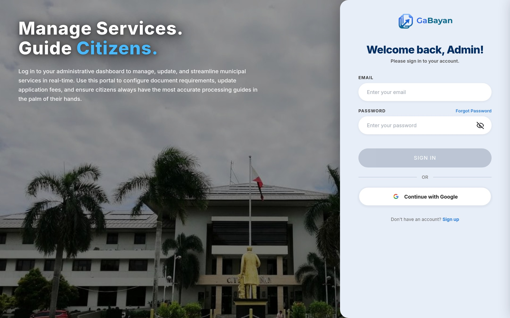
The Sign In screen
Type your Email and Password. The Sign In button turns on once both are filled.
Or choose Continue with Google and pick the Google account you signed up with.
The panel checks your admin record. Only active admins get in.
Messages you may see when signing in
Message
Meaning and what to do
This account is not registered as an admin.
The login exists, but there is no admin record (for example, a citizen account). Sign up for an admin account first.
Your account is still awaiting Super Admin approval.
Your sign-up is in the Review Queue. Wait for the approval e-mail.
This account has been deactivated. Please contact the Super Admin.
The Super Admin deactivated the account ().
Email or password is invalid.
Wrong e-mail or password. After 5 wrong passwords for the same e-mail, this browser locks sign-in for that e-mail for 10 minutes (Account Temporarily Locked).
This email address cannot be used.
The Google account belongs to a citizen of the mobile app. Use a different Google account.
Requesting an admin account Everyone
New staff request an account with Sign up on the Sign In screen (). Fill in your full name, e-mail and office, and a password that meets every rule in the checklist: at least 8 characters, a symbol, a capital letter and a number.
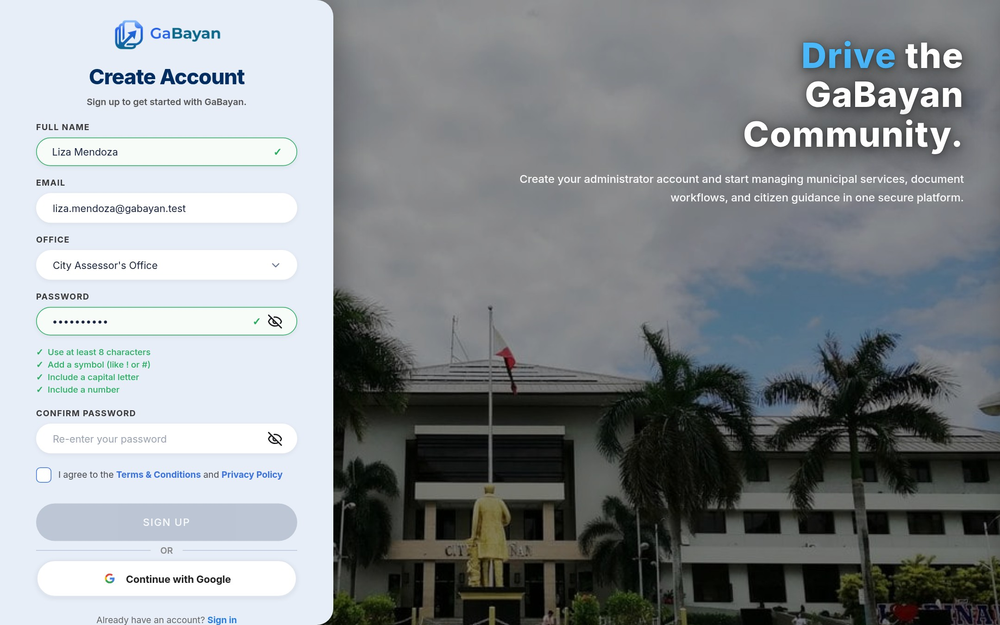
Create Account screen with the live password checklist
Before signing up you must accept the Terms & Conditions and Privacy Policy. Ticking the box opens them (). I Agree ticks the box and Not now leaves it empty. The accepted version (currently 1.0) and the time are saved with the account.
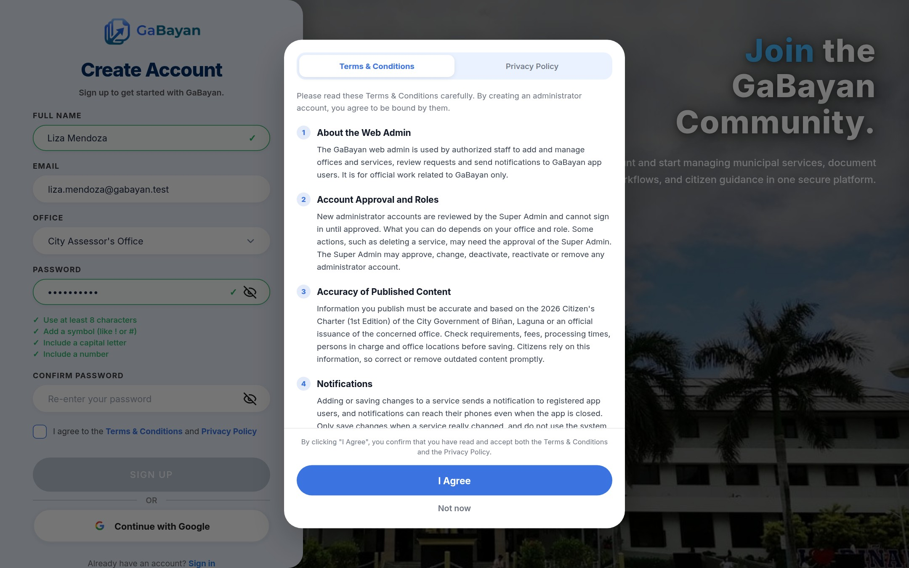
Terms & Conditions and Privacy Policy, shown before an admin account is created
What happens after Sign Up
A Firebase login is created and given one of the built-in avatars at random.
An admin record is saved with status Pending, and a Pending Admin Account request appears in the Super Admin's Review Queue. The Super Admins' Activity Log gets a New admin request entry.
Two e-mails go out: Under Review to the new admin, and New Admin Account Request to the Super Admin's address.
You are signed out. You can sign in once the Super Admin approves, and you will get an Approved e-mail.
With Google: on the Sign Up screen choose Continue with Google. A Complete Your Profile dialog asks for your full name and office, and Confirm & Submit sends the same request. Cancel removes the unfinished Google login.
Resetting a forgotten password All admins
Forgot Password on the Sign In screen opens a three-step reset (). The server creates and checks the code, so the browser never sees it.
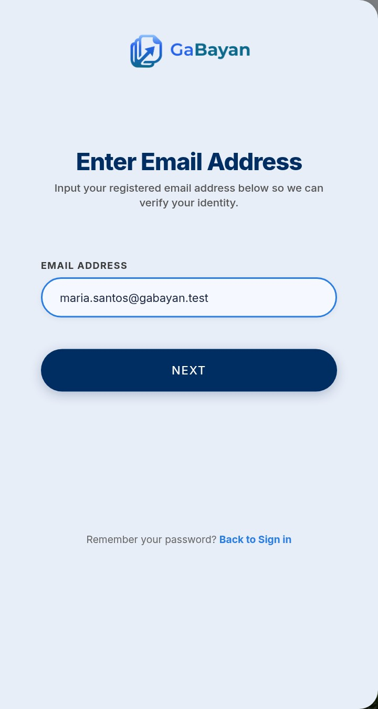
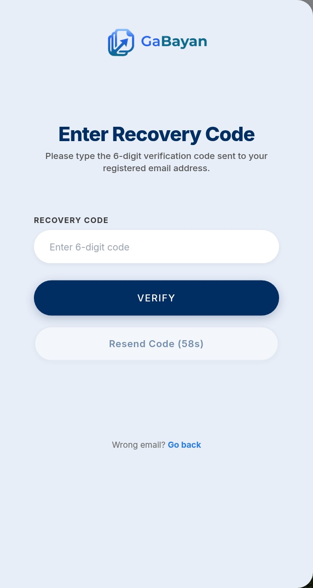
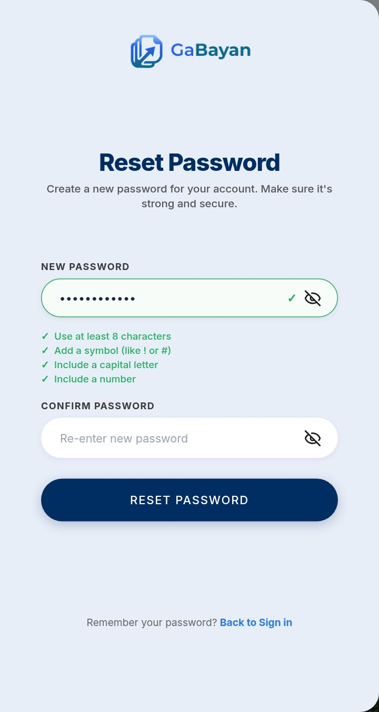
Password reset: (1) enter your e-mail, (2) type the 6-digit code from the e-mail, (3) choose a new password
Password-reset rules (enforced by the server)
Rule
Value
Who can use it
Only e-mails of active admin accounts. Others get Email is not registered or invalid.
Code
6 digits, sent by e-mail, valid for 5 minutes.
Wrong codes
After 5 wrong tries the code is cancelled; request a new one.
Resend
At most once every 60 seconds (Resend Code counts down).
New password
Same rules as sign-up. After the reset, every other signed-in session of that account is signed out.
Finding your way around All admins
Every page after sign-in shares the same frame (): a sidebar menu on the left, a top bar with page tools and your profile, and the page itself.
12345678
The workspace (Dashboard of a Super Admin)
Sidebar menu: the pages you may open. Super Admin pages are never shown to office admins.
Review Queue badge: the number of pending requests, kept up to date live.
Collapse sidebar: shrinks the menu to icons. The choice is remembered.
Profile button: your name and role. Opens Edit Profile and Sign Out.
Page banner: the page title, with the date and time on the Dashboard.
Main action of the page, for example Add New Office or Add New Service.
Summary cards with the key numbers.
Detail cards, such as rankings and charts. Many link to the full page.
Sidebar menu
Menu item
Opens
Shown to
Dashboard
Summary of the system, or of your office
All admins
Service Management
Super Admin: all offices. Office admin: your office's services.
All admins
Map Management
First-floor plan
Super Admin
Analytics
Charts and rankings (office admins: own office)
All admins
Review Queue
Requests, history, Deleted Records
Super Admin
Account Management
Citizen and admin accounts
Super Admin
Activity Log
Your activity entries
All admins
On phones and small tablets the sidebar becomes a drawer, opened with the menu button at the top left (). If an office admin opens a Super Admin page directly, for example from a bookmark, the panel sends them to their own office page or the Dashboard.
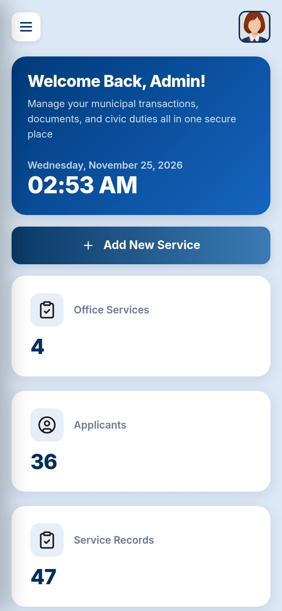
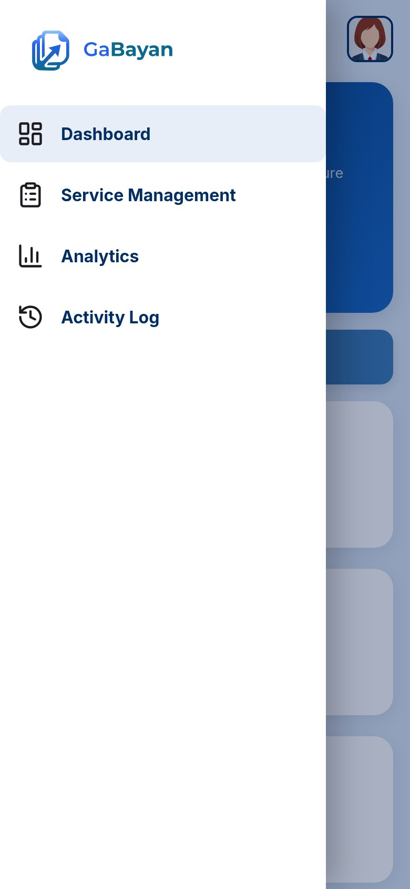
On a phone: the Dashboard of an office admin (left) and the menu drawer (right)
Dashboard All admins
The Dashboard is the first page after sign-in. Its content depends on your role.
Super Admin (): Total Offices, Total Services, Total Users (citizen accounts), the five Most Used Services and the Completion Trend for the last 12 months. The Add New Office button opens the office form ().
Office admin (): Office Services, Applicants (citizens who track one of the office's services) and Service Records. The rankings and trend cover only their office. Add New Service opens the service editor.
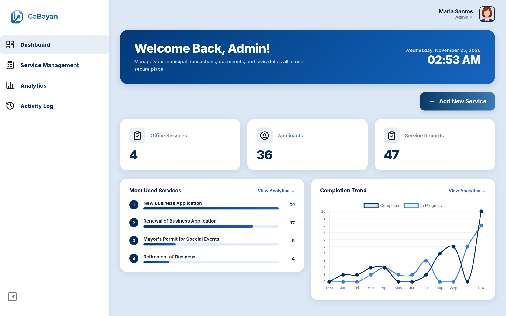
Dashboard of an office admin: the numbers of one office only
Note
The numbers are counted on the server, not in the browser. The page shows the last copy at once, then asks the server whether anything changed and redraws only if it did. Switching back to the tab checks again. explains how this works.
Managing offices Super Admin
Service Management lists every office as a tile (). Type in Search office… to filter, and click a tile to open that office's services. Offices in Deleted Records are not shown.
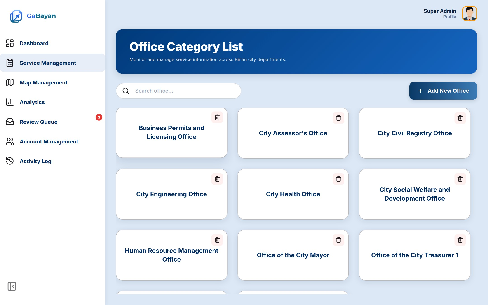
Service Management: every office as a tile, with the delete button shown on hover
Adding an office or room
Add New Office, on this page or on the Dashboard, opens the form in .
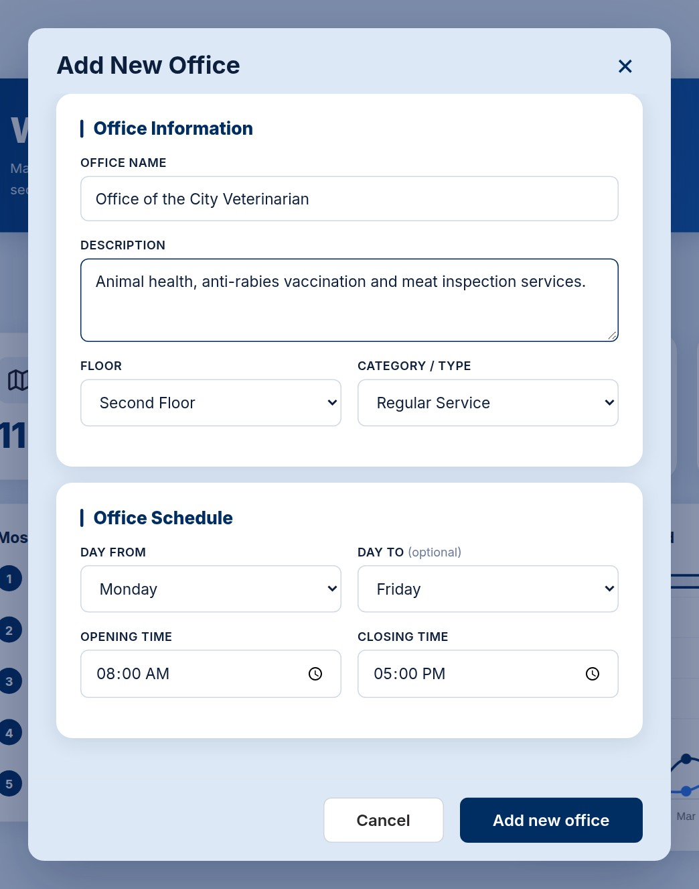
The Add New Office form
Office Name (up to 100 characters) must not be used by any other office or room, including those in Deleted Records.
Category / Type decides what is created. Regular Service makes an office, which has services and appears in Service Management. Emergency Services, Building Access, Facilities and Amenities, Comfort Rooms and Suites and Hubs make a room, a place citizens can be guided to that has no services.
Floor: First, Second or Third. Only first-floor places can be put on the map and used as navigation destinations.
Schedule: Day From, an optional Day To, and opening and closing times, saved as one text such as Mon-Fri, 8AM-5PM.
A new office is announced to every citizen in the app (“A new office added”) and recorded in the Activity Log.
Deleting an office
Hover over a tile and click the trash icon. After you confirm (, left), the office and all of its services move to Deleted Records. You can recover them within 30 days (). Its map room is freed in the meantime.
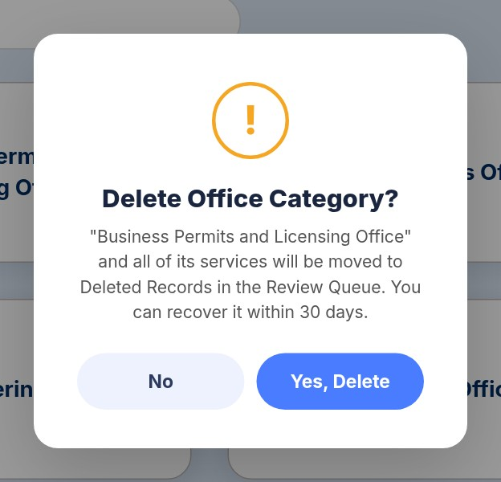
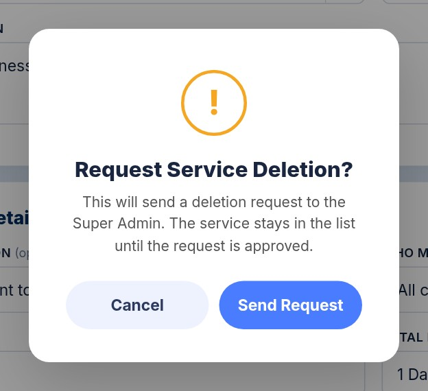
Confirmation dialogs: a Super Admin deleting an office (left) and an office admin requesting a service deletion (right)
Note
Office details, such as the name, description, floor, category and schedule, are edited in Map Management by clicking the office (). Renaming there also updates the admins linked to the office and every service step that guides citizens to it.
Managing services All admins
The Office Services page lists the services of one office (). A Super Admin reaches it from an office tile. For an office admin, Service Management always opens their own office, and other offices cannot be opened. Click a tile to edit a service, or Add New Service to create one.
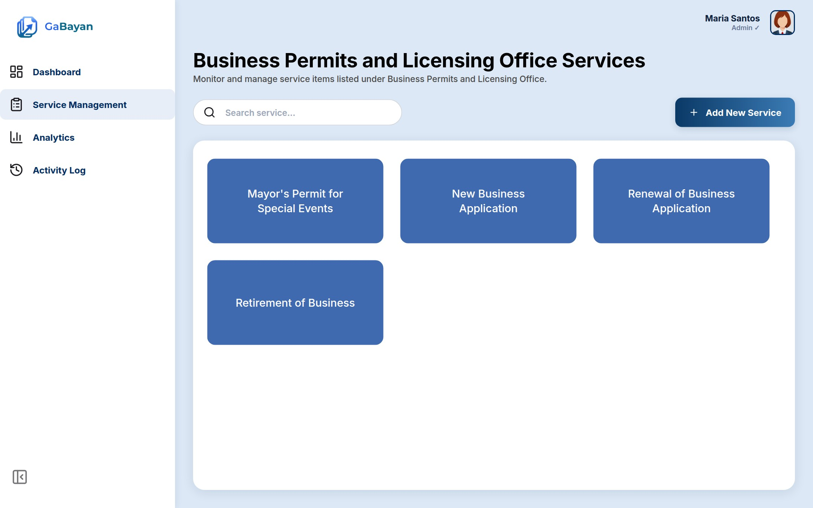
Office Services as seen by an office admin: only the services of their office
The service editor
One page is used both for adding and for editing (). A service has general details and one or more channels, shown as tabs, for example Walk-In and Online. Each channel has its own transaction details, requirements and steps.
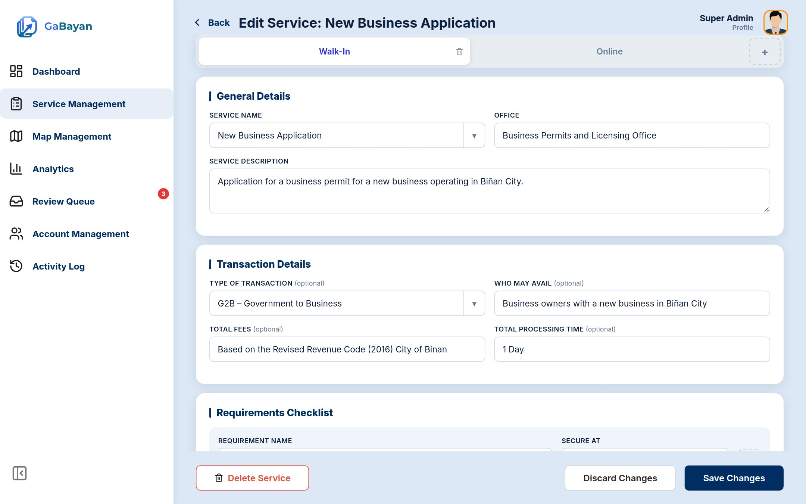
Edit Service: channel tabs, general details and the transaction details of the Walk-In channel
Parts of a service
Part
Fields
Channel tabs
+ adds a channel. Click a tab's name to rename it and the trash icon to remove it; a service keeps at least one channel.
General Details
Service Name, Office (fixed, except when a Super Admin adds a service without choosing an office first) and Service Description. All are required.
Transaction Details
Type of Transaction (G2C, G2B, G2G), Who May Avail, Total Fees, Total Processing Time. All optional, per channel.
Requirements Checklist
A list of Requirement Name + Secure at (where to get it), both required for each row. Citizens tick these off in the app.
Step-by-Step Guide
The steps citizens follow, described in . Drag a step by the dotted handle at the left of its header to reorder; click the header to open or close it.
Location and contact
Location and Contact Number (required), Email (optional).
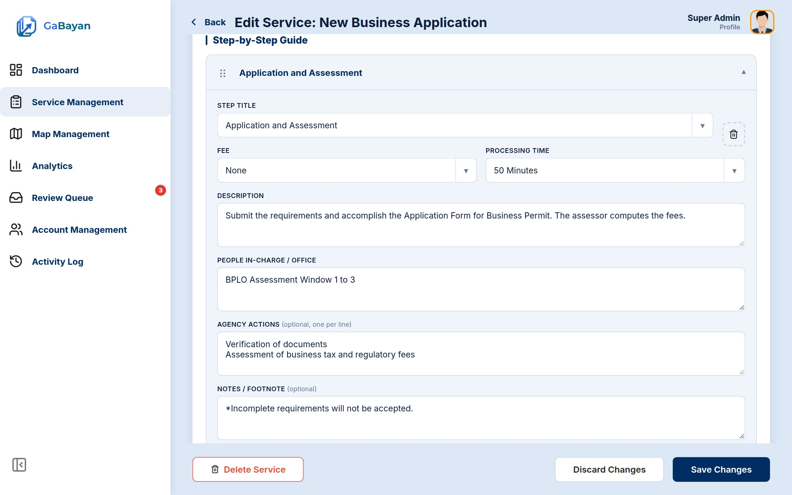
A step of the Step-by-Step Guide, opened for editing
Fields of a step
Field
Required
Notes
Step Title
Yes
Suggestions such as Application and Assessment, Payment, Claiming of Permit.
Fee
Yes
For example None or an amount.
Processing Time
Yes
For example 15 Minutes, 1 Day.
Description
Yes
What the citizen does in this step.
People In-Charge / Office
Yes
Personnel or window responsible.
Agency Actions
No
What the office does, one per line.
Notes / Footnote
No
Extra remarks, for example how long a payment takes to be credited.
Online Link
No
A web address for online steps.
Navigate to
No
Must be picked from the list of first-floor offices and rooms. The app then shows a Start Navigation button for the step.
Saving
Missing fields are highlighted. The editor opens the right channel and step and explains what is missing.
Adding: the service's ID is made from the office and the service name, so a name already used in that office is refused, including a service in Deleted Records.
Editing: Save Changes asks for confirmation. If the service or its office was deleted in the meantime, the save is stopped.
Every save notifies citizens. A new service sends “A new service added” and a change sends “there's some changes”, to every citizen of the app. Save only when something really changed.
Leaving the page with unsaved changes, by a link, the back button or closing the tab, asks first.
Deleting a service
Super AdminDelete Service moves it to Deleted Records for 30 days.
Office AdminDelete Service sends a deletion request to the Super Admin (, right). The service stays visible until the request is accepted. Asking twice for the same service shows Already Requested.
Map Management Super Admin
Map Management decides which office or room occupies each room of the City Hall's first floor (). The mobile app uses this map to guide citizens.
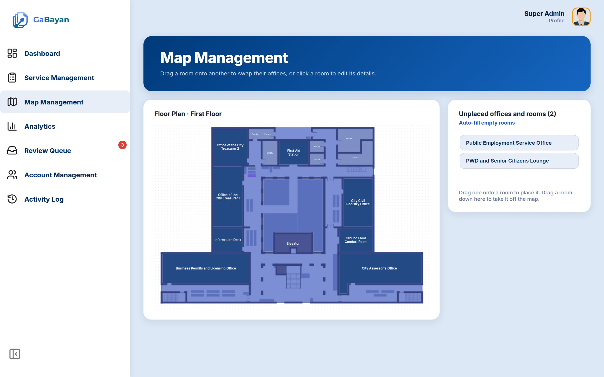
Map Management: the first-floor plan and the tray of unplaced offices and rooms
Swap: drag a room onto another room.
Place: drag a name from Unplaced offices and rooms onto an empty room.
Remove: drag a room down into the tray.
Edit: click a room or a name in the tray, or press Enter on it. This opens the office form with the current details.
Auto-fill empty rooms places the unplaced names into empty rooms in alphabetical order.
Every change is saved immediately. A message at the bottom offers Undo.
The plan has 15 rooms, numbered clockwise from the bottom-left wing (room 1) to the bottom-right wing (room 15). The elevator is fixed. Renaming through the edit form goes through the server, which also updates linked admins and Navigate to steps (). Changing the floor of a placed office takes it off the map.
Analytics All admins
The Super Admin sees the whole system ( and ). An office admin sees the same kind of numbers for their own office only ().
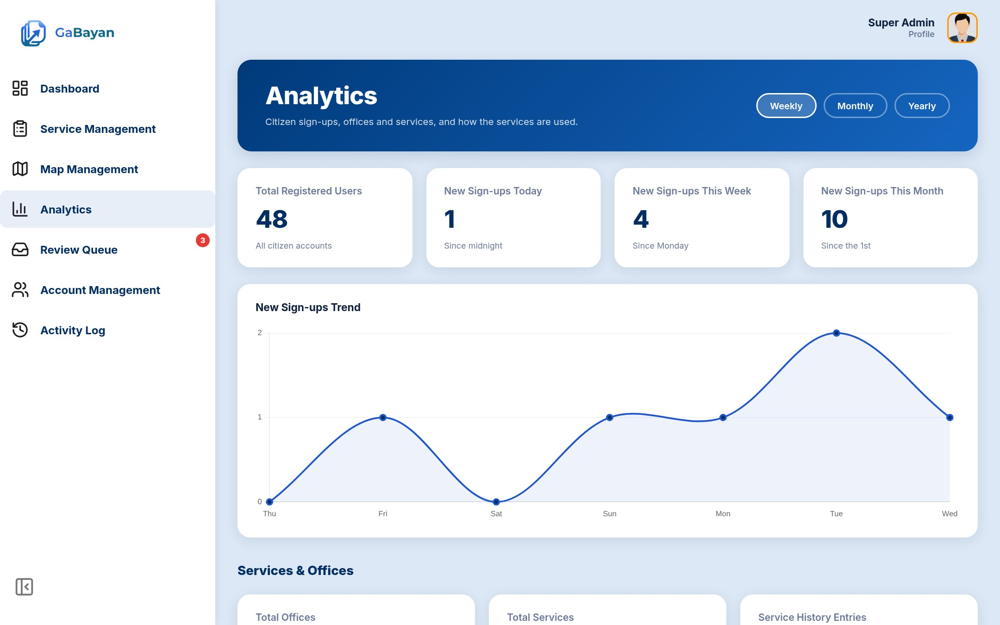
Analytics for the Super Admin: citizen sign-ups, with Weekly, Monthly and Yearly views
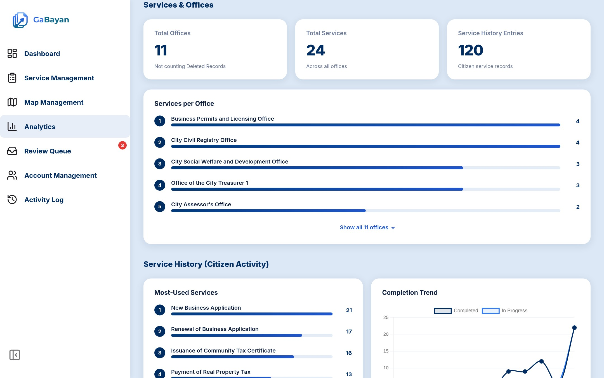
Analytics, lower part: offices and services, and how citizens use the services
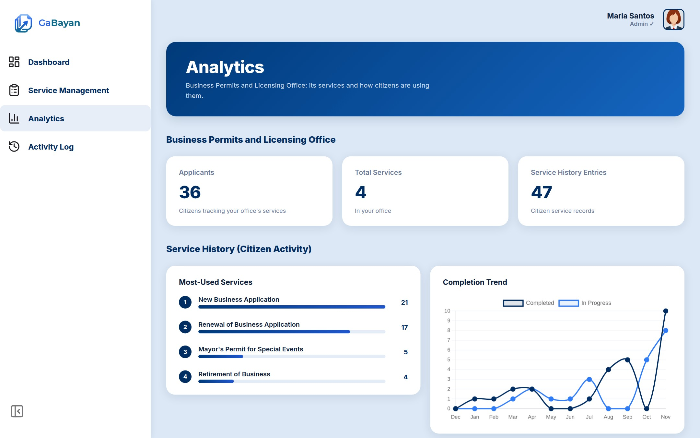
Analytics for an office admin: one office only
What the numbers mean
Number or chart
Meaning
Total Registered Users
Citizen accounts of the mobile app.
New Sign-ups Today / This Week / This Month
By the Manila calendar. The week starts on Monday.
New Sign-ups Trend
Weekly: the last 7 days. Monthly: the last 12 months. Yearly: the last 5 years.
Total Offices / Total Services
Active offices and their active services. Deleted Records are not counted.
Services per Office
Offices ranked by number of services. The top 5 are shown; Show all expands the list.
Service History Entries
Services that citizens track in the app, one entry per citizen and service.
Most-Used Services
The 5 services with the most history entries.
Completion Trend
Per month, for the last 12 months: entries last updated that month, split into Completed and In Progress.
Applicants (office admins)
Different citizens who track at least one of the office's services.
Review Queue Super Admin
The Review Queue has three tabs at the top: Pending Request (with a count), Completed Request and Deleted Records. Request tabs are filtered by date (Today, This Week = from Monday to yesterday, Earlier) and by type, and you can search them by name, e-mail, office or service.
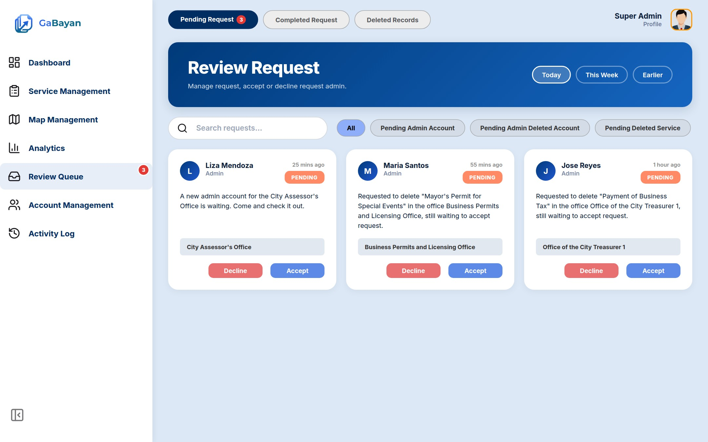
Pending requests: a new admin account and two service deletions
Request types and what Accept and Decline do
Request
Accept
Decline
Pending Admin Account
The account becomes Active and can sign in. The requester gets an Approved e-mail and an Activity Log entry.
The pending login and admin record are removed. The requester gets a Not Approved e-mail.
Pending Deleted Service
The service moves to Deleted Records (30 days). The server does this in the same transaction that closes the request. The requester is e-mailed and gets an Activity Log entry.
The request is removed and the service stays. The requester is e-mailed and gets an Activity Log entry.
Pending Admin Deleted Account
The admin's record and login are removed, and they are e-mailed.
The request is removed and the admin is e-mailed.
Note
Admins now delete their own account from Edit Profile (), so the panel no longer creates Admin Deleted Account requests. The Review Queue still handles any that exist.
Completed requests
Accepted requests are kept as history, filtered by the date they were resolved (). Earlier shows the latest 100. The trash icon on a card deletes that history record for good.
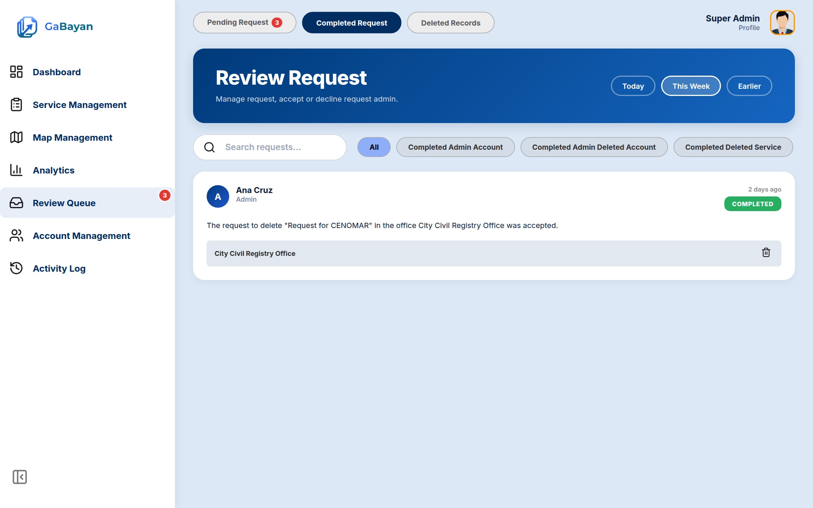
Completed requests resolved this week
Deleted Records
Deleted offices and services are kept for 30 days (). Each card shows who deleted it, or who asked for the deletion, when it was deleted and when it will be deleted for good. The days-left label turns red when 3 days or fewer remain.
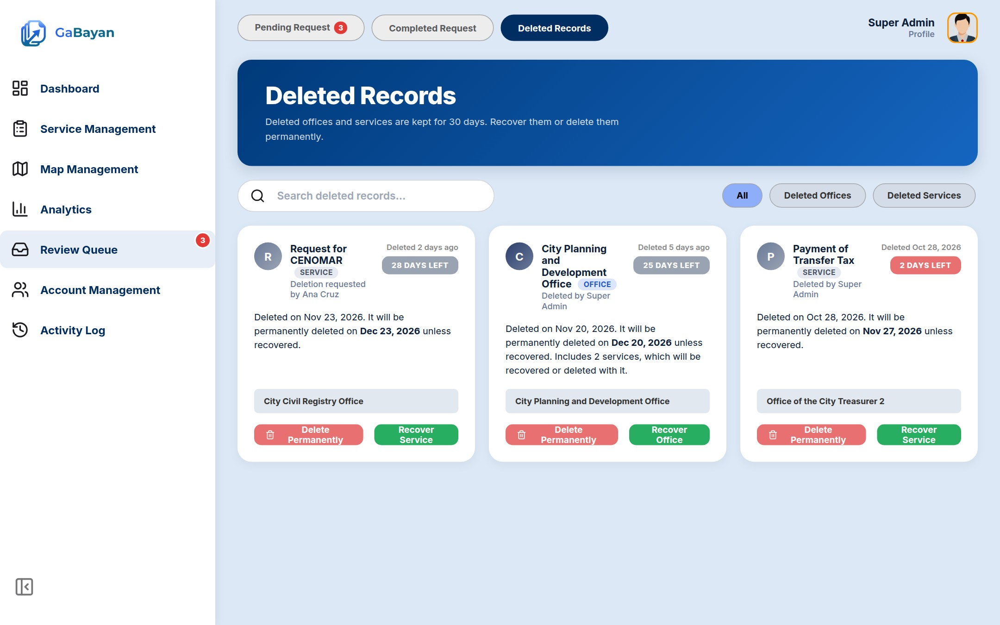
Deleted Records: two services and an office with its services
Recover Service puts the service back in its office. This is not possible while its office is itself deleted: recover the office first.
Recover Office brings back the office with all its services, and puts it back in its map room if that room is still free.
Delete Permanently asks twice. The second time you must type the exact name, which the server checks as well. It removes the item and everything stored under it. This cannot be undone.
Every night at 3:00 AM (Manila time) the server permanently deletes items whose 30 days have passed.
Account Management Super Admin
Two lists, switched at the top right: User Management (citizens of the mobile app, ) and Admin Management (web admins, with their office). Status tabs filter the list, and the search box matches names, e-mails and offices.
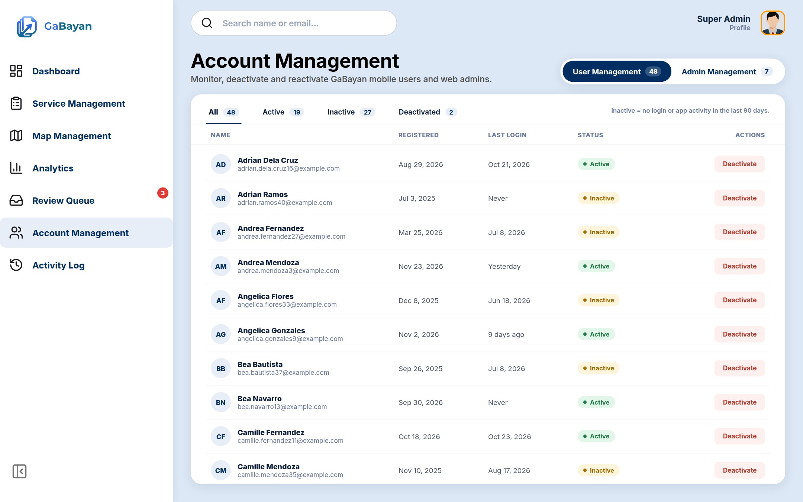
User Management: citizen accounts with their last login and status
Account statuses
Status
Meaning
Active
Signed in or used the app in the last 90 days.
Inactive
No sign-in or app activity in the last 90 days. This is information only: the person can still sign in.
Deactivated
Turned off by the Super Admin. The person cannot sign in, but their record and history are kept.
Pending
Admins only: a sign-up waiting in the Review Queue. The row links there.
Last Login comes from Firebase Authentication and includes the mobile app's automatic session refreshes. Deactivate opens the dialog in . It signs the person out on every device and blocks sign-in, and the optional reason is kept with the record. Reactivate restores the account's previous status. Your own account and Super Admin accounts cannot be changed here.
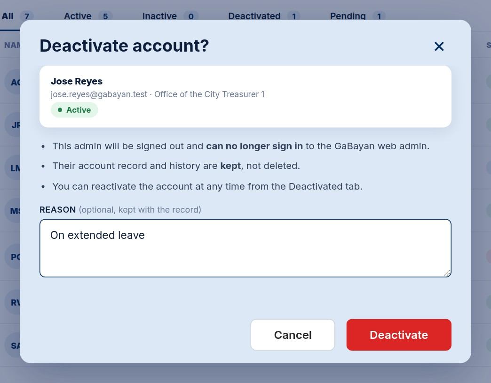
Deactivating an admin account
Activity Log All admins
The Activity Log is a live list of what happened, newest first (). Every admin has their own copy:
Super Admins get every entry: services added, changed or deleted, deletion requests, offices added or deleted, recoveries, accounts accepted, declined, deactivated or reactivated, and new admin requests.
Office admins get entries about themselves: their account was accepted, and their deletion request was accepted or declined.
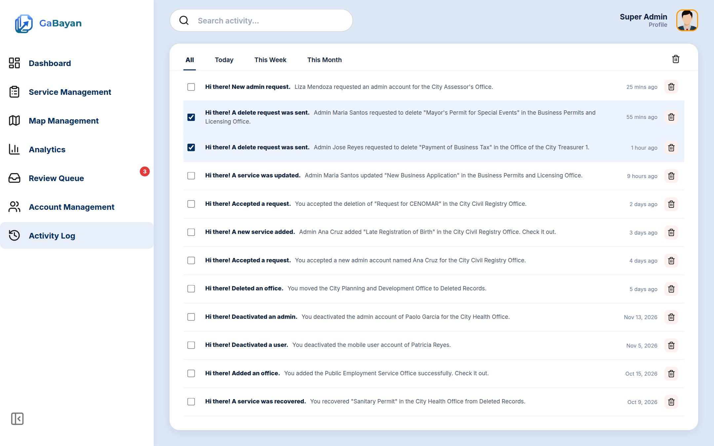
Activity Log with two entries ticked for deletion
Filter by All, Today, This Week or This Month, or search. Tick entries and click the trash icon at the top to delete them, or use a row's own trash icon. Deleting only removes your copy. The latest 300 entries are shown. lists every entry type.
Your profile and signing out All admins
Click your name at the top right to open Edit Profile or Sign Out.
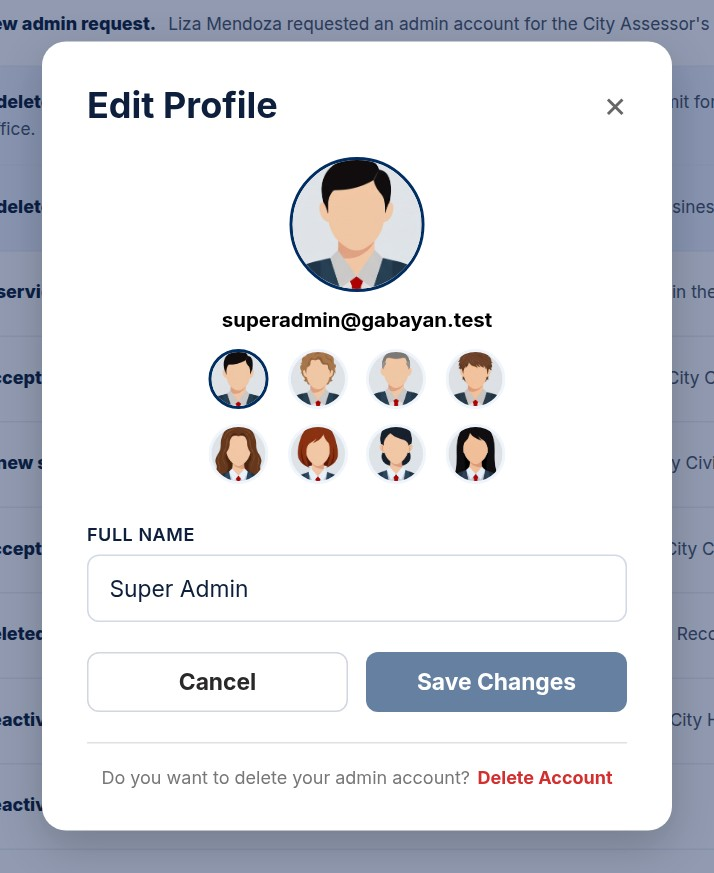
Edit Profile: avatar, name and account deletion
Edit Profile: choose one of eight avatars and change your full name. Your e-mail, and office for office admins, are shown but cannot be changed here.
Delete Account: after a warning, confirm your identity with your password, or the same Google account. A final confirmation then deletes your Activity Log, your admin record and your login, and returns you to Sign In.
Sign Out: after confirming, the panel signs you out and clears what it stored in this browser: the session, cached lists and Firestore's offline copy. This matters on shared office computers.
Roles and Permissions
Who may open which page and do which action, how an admin account moves from sign-up to removal, and the layers that enforce all of this.
Admin account states
Every admin has a record at admin/{uid} with a role (admin or super_admin) and a status. shows how the status changes.
Life of an admin account
Inactive, seen in Account Management, is not a stored status. It is worked out on the fly: no sign-in or app activity for 90 days.
Deactivating also disables the Firebase login and signs the person out everywhere. Reactivating restores the status the account had before.
There is no screen that creates a Super Admin. explains the manual steps.
Page access
Who can open each page
Page
Office Admin
Super Admin
If an office admin opens it
Dashboard
Own office
Everything
—
Service Management (all offices)
No
Yes
Sent to their own Office Services page
Office Services
Own office
Any office
Always shows their own office
Add / Edit Service
Own office
Any office
Other offices: You can only manage services that belong to your own office.
Map Management
No
Yes
Sent to the Dashboard
Analytics
Own office
Everything
—
Review Queue
No
Yes
Sent to the Dashboard
Account Management
No
Yes
Sent to the Dashboard
Activity Log
Own entries
Own entries (receives all)
—
What each role can do
Actions by role, and where the rule is enforced
Action
Office Admin
Super Admin
Enforced by
Add an office or room
No
Yes
Panel; Firestore rules
Edit or rename an office
No
Yes
Panel; rename: server (renameOffice)
Move an office to Deleted Records
No
Yes
Server (trashOffice)
Add or edit a service
Own office
Any office
Panel; Firestore rules
Delete a service
Request only
Yes
Server (trashService)
Change the first-floor map
No
Yes
Panel; Firestore rules
Accept or decline requests
No
Yes
Panel; server for trash and login removal
Recover or permanently delete records
No
Yes
Server (restore*, purge*)
List, deactivate or reactivate accounts
No
Yes
Server (listAccounts, setAccountStatus)
See dashboard and analytics numbers
Own office
All
Server (getStats returns only what the role may see)
Edit own profile, delete own account
Yes
Yes
Firebase Authentication (identity re-check)
How access is enforced
Access is checked in four layers. Only the last two are real security. The first two make the panel pleasant and fail closed.
Menu.js/shell.js draws Super Admin items only when the role is known to be super_admin. While the role is unknown, they stay hidden.
Page guard. Every page starts with startPage() → requireAdmin() (js/core/session.js). It sends signed-out, pending, deactivated and unknown users to the login page. An office admin who opens a Super Admin page goes to the page listed in SUPER_ADMIN_PAGES.
Server. Each adminApi action names the role it needs. requireRole() (functions/src/lib/auth.js) reads the caller's admin record on every call and refuses anyone who is not active or not a Super Admin when one is required. getStats returns only the caller's office to office admins.
Firestore security rules. The browser reads and writes many collections directly, so the rules in the Firebase console must allow only what allows. The rules are not stored in this repository.
Important
Never rely on the menu or the page guard alone. Anyone can call Firebase directly from the browser's console, so every privileged action must be checked by the server or by the Firestore rules. lists what the rules should guarantee.
Frontend Architecture
How the browser side of the panel is put together: the page structure, the modules, the session check, safe rendering, live data and caching, and the shared components and styles.
Design principles
No framework, no build stepPlain HTML, CSS and JavaScript ES modules. The browser loads public/ exactly as it is in the repository, so there is nothing to compile.
One page = one HTML file + one moduleEach page has a thin HTML file and a module in js/pages/ that wires data to components.
Safe by defaultMarkup is built with an escaping template tag and events are wired with delegation, so there is no inline JavaScript and the strict Content Security Policy holds.
Live where it mattersLists that change while you look (requests, offices, services, the activity log) use Firestore listeners. Heavy numbers come from the server.
Server for privileged workAnything that needs extra rights or reads a lot goes through the adminApi Cloud Function.
Anatomy of a page
Every admin page follows the same pattern (). The shell script is a classic script in <head>, so <app-sidebar> and <app-topbar> are defined before the body is parsed and draw on the first paint. The page module runs after that.
Anatomy of a page: the HTML file (left) and the modules its page script uses (right)
<link rel="stylesheet" href="css/app.css">
<script src="js/shell.js"></script> <!-- sidebar + top bar on first paint -->
<script type="module" src="js/pages/dashboard.js"></script>
…
<app-sidebar active="dashboard"></app-sidebar>
<main class="main"><app-topbar></app-topbar> …page content… </main>
// js/pages/dashboard.js
import { startPage } from '../core/page.js';
const session = await startPage(); // { uid, email, name, role, status, office, officeId, photoURL }
Folders and modules
Frontend folders
Folder
Responsibility
Main files
js/shell.js
Sidebar and top bar custom elements, the menu (NAV), Super Admin page list, saved session hint, avatars, collapse and drawer.
One-off maintenance scripts run from the browser console (). Not served by Firebase Hosting.
fill_service_details.js, …
Session and page start-up
Before a page shows data, requireAdmin() confirms who is signed in and whether they may be there ().
Page start-up: from the first paint to a confirmed session
The session is { uid, email, name, role, status, office, officeId, photoURL, savedAt }. officeId is found by looking up the office whose office_name equals the admin's admin_office.
The saved hint is kept in localStorage (gabayan_session). It lets the menu and top bar draw instantly, but it is never trusted for access: it is replaced by the confirmed session, and a saved copy older than 10 minutes is read again.
Background re-check. When a recent saved copy is used, the admin record is still read in the background. If access was revoked meanwhile, the page is left.
onSession(callback) lets components react when the session changes, for example after the profile is edited.
Rendering safely
Names, descriptions and other text come from the database, so the panel never inserts them as raw HTML. js/core/dom.js provides:
import { html, raw, render, on, $ } from '../core/dom.js';
render(list, html`<li data-id="${office.id}">${office.name}</li>`); // every ${…} is escaped
render(box, html`${items.map((i) => html`<b>${i}</b>`)}`); // nested html`` stays markup
on(list, 'click', '[data-action="delete"]', (event, button) => remove(button.dataset.id));
html`…` escapes every value; raw() marks markup you built yourself.
render(el, content) inserts html results as markup and plain strings as text.
on(root, type, selector, handler) is event delegation, so there is no onclick in markup. Inline handlers would also be blocked by the Content Security Policy.
Live data and caching
Firestore listeners
Firestore is started with a persistent local cache (IndexedDB, shared between tabs), so revisited pages show data at once. liveQuery() and liveDoc() in js/data/live.js skip the empty first answer that comes from the cache on a first visit. Pages therefore keep their loading skeleton instead of flashing “nothing here”.
Version-checked server answers
Answers from the server that every visit needs are kept in the browser and only downloaded again when the data really changed (). These are the dashboard and analytics numbers, the account lists and Deleted Records. Firestore triggers bump a version number for each topic in meta/versions whenever relevant data is written ().
Version-checked caching: the browser downloads data again only after a real change
What the panel caches in the browser
Cache key
Stored in
Content and refresh rule
stats-v3
localStorage
Dashboard and Analytics numbers, shared by both pages. Checked on every visit and when the tab is shown again.
accounts:users, accounts:admins
sessionStorage
Account lists with names and e-mails, so kept for this tab only. Downloaded again when accounts change, and at least every 10 minutes for “last login”.
deleted
sessionStorage
Deleted Records. Updated in place after your own recover or delete.
Every key is stored per admin (gabayan_cache:{uid}:{key}), and all of them are removed on sign-out. Pages pass force right after the admin's own change, because the trigger that bumps the version may not have run yet.
Calling the server
js/core/api.js wraps the two callable functions:
import { api, recovery } from '../core/api.js';
const { accounts } = await api.listAccounts('admins'); // adminApi, action "listAccounts"
await api.trashService(officeId, serviceId); // Super Admin only (checked on the server)
await recovery.sendCode(email); // adminAuth, no sign-in needed
Every call sends { action, data }. The Firebase SDK adds the caller's ID token, which the server verifies.
Errors become a normal Error with the server's user-friendly message and a .code such as permission-denied, not-found or invalid-argument. Network problems become Could not reach the server…
The timeout is 540 seconds, long enough for permanently deleting a large office.
newNotifyId() creates the random ID that tells the server to notify citizens about a save ().
Activity log entries and e-mails
Writing activity entries
logActivity(type, details) (js/core/activity-log.js) writes one copy of the entry to the activity log of every Super Admin listed in app_settings/super_admin.uids. It can also add an extra recipient: details.recipient_uid is one admin, and 'all_admins' means every active admin, for Super Admin actions only. It never throws and is never awaited before a success message, so a logging problem cannot block real work.
E-mails
Status e-mails are sent from the browser through EmailJS (js/core/email.js). EmailJS is loaded only when the first e-mail is sent. Recovery codes are sent by the server instead ().
E-mails sent by the admin panel
When
To
Subject
Admin account requested
Requester
GaBayan Account Request - Under Review
Admin account requested
Super Admin address
GaBayan - New Admin Account Request
Account request accepted / declined
Requester
GaBayan Account Request - Approved / Not Approved
Office admin asks to delete a service
Super Admin address
GaBayan - Service Deletion Request
Deletion request accepted / declined
Requester
GaBayan - Your service deletion (or account deletion) request was approved / not approved
Forgot password
The admin
Recovery code (sent by the adminAuth function)
The Super Admin's address is the SUPER_ADMIN_EMAIL constant in js/core/email.js. With the emulators, e-mails are only logged in the console.
User-interface components
Reusable components in js/components
Component
What it does
Used by
toast.js
Centred message dialogs: toast.success/error/info/loading, confirm(), promptMatch() (type the name to confirm) and the bottom snackbar() with Undo.
Every page
modal.js
Dialog base: backdrop, Escape and outside-click closing, focus kept inside, optional “are you sure?” before closing.
Forms and dialogs
office-form-modal.js
Add and edit office or room form, with duplicate checks, schedule building and validation.
Dashboard, Service and Map Management
service-editor.js
Channel tabs, transaction details, requirements and steps, with drag-to-reorder and validation.
Add / Edit Service
combo-box.js
Text field with suggestions. With strict, only listed values are accepted.
Service editor
office-picker.js
Live suggestion sources: all offices, and first-floor “destinations”.
Service editor
floor-plan.js
SVG first-floor plan with 15 rooms, drag and drop with mouse, pen or touch, and keyboard support.
Map Management
chart.js
Line charts with Chart.js, loaded on demand with an integrity hash.
Dashboard, Analytics
rank-list.js, skeleton.js
Ranked lists with bars; loading placeholders.
Dashboard, Analytics, lists
leave-guard.js
Asks before leaving with unsaved changes: links, browser Back, closing the tab.
Terms & Conditions and Privacy Policy dialog and text (version 1.0).
Sign up
Styles and design tokens
All colours, type sizes, spacing, radii and shadows are defined once in css/base/tokens.css and used through CSS variables. This document uses the same palette.
Main design tokens
Token
Value
Used for
--navy
#002D62
Headings, primary buttons, active menu text
--navy-light
#2057CE
Highlights, focus, links in cards
--banner-from → --banner-to
#003a7a → #1565c0
Page banners
--main-bg
#dce8f5
Page background
--panel-bg / --active-bg
#e8eef8
Panels, active menu item
--text-dark
#0d1f3c
Body text
--text-muted
#6b7a99
Secondary text
--success · --warning · --danger
#16a34a · #d97706 · #dc2626
Status badges and messages
The typeface is Inter, self-hosted in public/assets/fonts (variable font, weights 400–800) and declared in css/base/fonts.css.
Cloud Functions
The server side of the panel lives in functions/ and deploys as the Firebase codebase admin, in region asia-southeast1. This chapter describes every function, what it checks and what it writes.
Overview
Functions of the admin codebase (functions/index.js)
Function
Kind
Runs when / does
adminApi
Callable (HTTPS)
The panel calls it for every privileged action (). Timeout 540 s.
adminAuth
Callable (HTTPS)
The login page's Forgot password (no sign-in needed). Uses the secret EMAILJS_PRIVATE_KEY.
onAdminCreated
Firestore trigger
admin/{uid} created: gives the login the custom claim admin: true and marks its e-mail verified, so password and Google sign-in can share one account.
onServiceWritten
Firestore trigger
A service was written with a new notify_id: notifies every citizen about a new or changed service.
onOfficeCreated
Firestore trigger
A new office with a notify_id: notifies every citizen.
versionsOn…Written (5)
Firestore triggers
Bump cache version numbers in meta/versions ().
purgeExpiredDeletedServices
Scheduled
Every day at 03:00 Asia/Manila: permanently deletes Deleted Records older than 30 days.
Global options (functions/index.js): region asia-southeast1, 512 MiB of memory, at most 10 instances. Both callable functions accept browser calls only from the panel's own addresses and add security headers to every response ().
adminApi: one function, many actions
The panel sends { action, data }. The function looks the action up in a table that names the role it needs and its handler, then:
Refuses unknown actions (invalid-argument).
Runs requireRole(). It needs a valid sign-in (the callable protocol has already verified the ID token) and reads admin/{uid} on every call: the status must be active, and the role must be super_admin when the action needs it.
Calls the handler with the caller (uid, name, role, office) and the data. Expected errors (HttpsError) reach the page with a friendly message. Anything else is logged and returned as Something went wrong. Please try again.
A single function means one warm instance serves every action, which gives fewer cold starts.
adminApi actions
Action
Role
What it does
listAccounts
Super
Lists users or admin merged with Firebase Auth data: last sign-in, last token refresh and whether the login is disabled. Version-checked (topics users / admins).
setAccountStatus
Super
deactivate: disables the login, revokes its sessions and records who, when and why. reactivate: enables the login and restores the previous status. Refuses your own account, Super Admins and pending admins.
deleteAuthUser
Super
Deletes an admin's Firebase login, after a declined sign-up or an accepted deletion. Refuses yourself and Super Admins.
trashService
Super
Marks the service deleted and starts its 30 days. With requestId, closes the matching deletion request in the same transaction.
trashOffice
Super
Marks the office deleted, frees its map room (kept for recovery) and leaves its services untouched.
listDeleted
Super
All deleted services (one collection-group query) and offices, with service counts. Version-checked (topic deleted).
restoreService
Super
Removes the trash fields. Refused while the service's office is deleted.
restoreOffice
Super
Removes the trash fields and gives the office its map room back if nobody took it.
purgeService, purgeOffice
Super
Permanent, recursive delete. Only for items in Deleted Records, and confirmName must equal the name exactly.
renameOffice
Super
Renames an office or room, refuses names already in use, and updates every admin.admin_office and every step's navigate_to that used the old name.
deleteCompletedRequest
Super
Deletes a completed_requests history record. The browser is not allowed to.
getStats
Any
Dashboard and Analytics numbers. An office admin receives only their office ().
adminAuth: password recovery
The whole forgot-password flow is checked on the server. The browser never sees the code (). The flow is a port of the mobile app's, limited to active admin accounts and kept in its own collection.
Password recovery on the server (adminAuth)
Wrong e-mails get the same answer as unknown ones (Email is not registered or invalid.). The password rules match the login page's checklist.
If e-mailing fails, the saved code is deleted again and the user sees Could not reach the email service…
The EmailJS private key is a Firebase secret (Secret Manager), never stored in the code.
Firestore triggers
New admins
onAdminCreated runs when an admin record is created at sign-up. It sets the custom claim admin: true and marks the e-mail verified, so the same person can later sign in with e-mail and password or with Google.
Citizen notifications
Saving a service or adding an office in the panel stamps a fresh random notify_id on the document, and only that sends notifications. Maintenance scripts, translation updates and trash or recovery writes do not stamp it, so they notify nobody. The trigger writes users/{uid}/notifications/{notify_id} for every citizen. Using notify_id as the document ID means a retried trigger overwrites instead of notifying twice. The mobile codebase's sendPushOnNotificationCreated then pushes each notification to the citizen's devices.
Notifications sent to citizens
Event
Title
Body
New service
Hi Citizen! A new service added.
{service} has been added to the {office}.
Changed service
Hi Citizen! Look, there's some changes.
The {service} service has some changes, come check it out.
New office
Hi Citizen! A new office added
A new office, {office}, is now available on GaBayan.
Cache version numbers
Five triggers keep meta/versions current. Each topic is a counter that goes up when data shown by a cached page changes ().
Which writes bump which cache topic
Trigger
Watches
Bumps
versionsOnHistoryWritten
users/{uid}/service_history/*
stats on every write (citizens ticking steps)
versionsOnUserWritten
users/{uid}
stats when a citizen is added or removed; users when a field shown in Account Management changes. Push tokens and other profile writes do not count.
versionsOnAdminWritten
admin/{uid}
admins when a field shown in Account Management changes
versionsOnOfficeWritten
offices/{id}
stats when the name or deleted flag changes; deleted when trash fields of a deleted office change
versionsOnServiceWritten
offices/{id}/services/{id}
The same, for services
Nightly purge of Deleted Records
purgeExpiredDeletedServices runs every day at 03:00 Asia/Manila with a 540-second timeout.
Offices first: every office whose permanentDeleteAt has passed is deleted recursively, with all its services and their data.
Then services, found with one collection-group query (or office by office if that index is missing), the same way.
Safety: a document is only ever deleted if isDeleted is still true. Recovered items have no permanentDeleteAt, so they never match. Counts and failures are logged.
Statistics engine
getStats counts next to the database, so browsers never download every record. computeStats() reads, with only the needed fields:
offices (name, deleted flag) and all services (deleted flag): active offices and services, and services per office;
users (createdAt): citizen totals and sign-ups per day, month and year (last 7 days, 12 months, 5 years);
every service_history entry: totals, applicants, the 5 most-used services and the 12-month completion trend, for all offices together and for each office on its own.
All calendar maths uses Manila time, a fixed UTC+8 with no daylight saving, and weeks start on Monday. A history entry counts as completed when its status is completed or done, and as in progress when it contains in progress or in_progress, or is pending or processing. Its month comes from last_updated.
Caching on the server and in the browser
The result is saved in stats/summary (computedAt, changeCount, data). It is counted again only when the stats version moved, the Manila date changed (for “today” and “this week”), or the copy is over an hour old as a safety net. refresh: true forces a recount right after an admin's own change.
viewFor() trims the result per caller. A Super Admin gets scope: "all". An office admin gets scope: "office" with only the entry whose name matches their admin_office.
The version sent to the browser is {stats version}:{Manila date}:{role}:{office}, so a change of role, office or day never leaves an old view on screen.
Shared helpers and hardening
functions/src/lib
File
Purpose
auth.js
requireRole(request, role): the admin record must be active, with the right role.
refs.js
Firestore handles and validId(): IDs from the browser must be non-empty, at most 1500 characters and contain no /.
errors.js
Short helpers for friendly HttpsErrors: invalid, not found, conflict, forbidden, too many.
bump() and withVersion() for version-checked answers.
cors.js
ALLOWED_ORIGINS: the only websites that may call the functions from a browser.
security-headers.js
Wraps both callables to add Strict-Transport-Security, X-Content-Type-Options and no-cache headers.
Destructive actions run in transactions: trash, recover and closing a request. Permanent deletes need the exact name a second time. covers the security settings in detail.
Functions owned by the mobile app Mobile app
The mobile repository deploys its own codebase, default, to the same project. Admin changes set them off: for example, a new service is translated to Filipino by translateService, and every citizen notification becomes a push message. Do not deploy or delete them from this repository.
Functions of the mobile codebase (DocsEase-MobileApplication/docsease/functions)
Password change while signed in (the app's Edit Profile).
isEmailRegistered
Checks an e-mail during the app's flows.
translateService, translateOffice
Firestore triggers that add Filipino fields (…_fil) with Google Cloud Translation and set _translated: true. Documents already marked are skipped.
translateExistingData
HTTPS endpoint that translates existing data in one go.
sendPushOnNotificationCreated
Sends a push notification for each new users/{uid}/notifications document to the devices in users/{uid}.fcm_tokens.
Data Model
Every Firestore collection the panel reads or writes, with its fields and who writes them. Both apps share these collections, so any change to them must be checked against the mobile app too.
Collection map
Firestore collections used by the admin panel, grouped by purpose, with who writes them
offices
Document ID: the office name in capitals with dashes, for example BUSINESS-PERMITS-AND-LICENSING-OFFICE. A new office therefore cannot reuse the name of one in Deleted Records.
Fields of an office document
Field
Meaning
office_name
Display name. Admins are linked to the office by this name.
description, schedule
Free text. Schedule is formatted like Mon-Fri, 8AM-5PM.
floor
first_floor, second_floor or third_floor
category
Always regular_service for offices.
map_slot, map_slot_v
Room on the first-floor plan (s1–s15) and numbering version (2). Older numbering is converted automatically.
notify_id
Random ID stamped by the panel on creation; triggers the citizen notification.
Trash fields: present while the office is in Deleted Records.
restoredAt, restoredBy_uid
Last recovery.
office_name_fil, _translated
Filipino name, written by the mobile app's translation function.
services
Path offices/{officeId}/services/{serviceId}. Document ID: {officeId}-{SERVICE-NAME}, for example BUSINESS-PERMITS-AND-LICENSING-OFFICE-NEW-BUSINESS-APPLICATION.
Fields of a service document
Field
Meaning
service_name, description
Name and general description.
location, contact_phone, contact_email
Where and how to reach the office for this service.
tabs
The channels, each with transaction details, requirements and steps (structure below).
created_at, updated_at, notify_id
Timestamps, and the notification trigger ID stamped on every panel save.
isDeleted + trash fields
As for offices, plus deletedFromOffice_id/_name, deletionRequest_id and deletionRequestedBy_uid/_name.
Filipino translations, written once by the mobile app's translateService ().
tabs: [
{
tab_name: "Walk-In",
transaction_type: "G2B – Government to Business", // optional
who_may_avail: "…", total_fee: "…", total_processing_time: "1 Day", // optional
requirements: [ { requirement_name: "Barangay Clearance", secure_at: "Barangay Hall" } ],
procedures: [
{
process_name: "Payment", fee: "…", processing_time: "15 Minutes",
process_description: "…", person_in_charge: "…",
agency_actions: ["Issuance of official receipt"], // optional, list
notes: "", online_link: "", // optional
navigate_to: "Office of the City Treasurer 1" // optional, first-floor place
}
]
}
]
Older services kept the transaction details on the service itself. The editor moves them into the first channel when the service is opened, and saving stores them there.
other_room
Rooms that are not offices, such as the information desk, comfort rooms or first aid. Same ID scheme as offices. Fields: room_name, description, floor, category (one of the non-office categories), schedule, created_at, map_slot, map_slot_v. The document ELEVATOR is drawn as a fixed label on the map and cannot be moved.
admin and activity_logs
Fields of an admin document (admin/{uid})
Field
Meaning
admin_id, full_name, email
Identity. The document ID is the Firebase Auth UID.
role
admin or super_admin
status
pending, active or deactivated
admin_office
Office name, which links the admin to offices.office_name. Empty for Super Admins.
Activity entries (admin/{uid}/activity_logs/{logId}) hold type, actor_uid, actor_name, actor_role, office_name, service_name, target_name, target_uid and createdAt. The page turns them into sentences ().
requests and completed_requests
requests/{id} holds only open requests: type (new_admin, delete_service or delete_admin), status: "pending", requested_by_uid, requested_by_name, requested_by_email and createdAt. Sign-ups add target_admin_uid and office_name; service deletions add office_id, office_name, service_id and service_name.
completed_requests/{id} keeps the same ID and fields plus status: "completed", resolvedAt, resolvedBy_uid and resolvedBy_name. Declined requests are simply removed.
users and their sub-collections Mobile app
Citizen data written by the mobile app (read by the panel)
Document
Fields the panel uses
users/{uid}
username (or full_name / first_name + last_name), email, createdAt, fcm_tokens. Account Management adds status and the deactivation fields.
…/service_history/{serviceId}
service_id, service_name, status (In Progress or Completed), progress (0–1), completed_steps, checked_requirements, tab_progress, last_updated
…/notifications/{notifyId}
title, body, service_id, is_read, timestamp. Written by the admin triggers.
…/conversations/{id}/messages
Chatbot history. Not used by the panel.
System documents
Single documents used by the system
Document
Content
app_settings/super_admin
uids: the Super Admins who receive every Activity Log entry. Kept by hand ().
meta/versions
Counters stats, users, admins, deleted.
stats/summary
computedAt, changeCount and data, the full statistics including byOffice.
meta/versions and stats/summary can be deleted safely. They are rebuilt on the next request, and every browser downloads fresh data once.
Indexes
firestore.indexes.json turns on collection-group indexes for services.isDeleted and services.permanentDeleteAt. Deleted Records and the nightly purge use them to search every office's services at once. If an index is missing, both fall back to searching office by office. Deploy it with firebase deploy --only firestore:indexes. The other queries use Firestore's automatic single-field indexes.
What the panel keeps in the browser
Browser storage used by the panel
Key
Where
Content
gabayan_session
localStorage
Session hint: uid, name, role, status, office, avatar. Never trusted for access.
gabayan_cache:{uid}:stats-v3
localStorage
Dashboard and Analytics numbers
gabayan_cache:{uid}:accounts:*, …:deleted
sessionStorage
Account lists and Deleted Records, for this tab only
gabayan_sidebar_collapsed
localStorage
Sidebar collapsed or not
gabayan_badge_pending
sessionStorage
Last pending-requests count, so the badge draws at once
gabayan_login_lockout
localStorage
Failed sign-in counters per e-mail (lockout)
gabayan_emulators
sessionStorage
1 while the tab uses the emulators
Firestore and Auth databases
IndexedDB
Firestore offline cache and the Firebase sign-in
Signing out removes the session hint and every cache entry, and deletes Firestore's offline cache.
Key Workflows
The processes that cross pages, functions and both apps, followed from start to finish.
Approving a new admin
Approving a new admin account. Declining removes the pending login and record instead and sends a Not Approved e-mail.
The new admin signs up (). The browser creates the login, the admin/{uid} record (pending) and the new_admin request, logs admin_account_requested for the Super Admins and sends the two e-mails.
onAdminCreated gives the new login the admin claim.
The Super Admin sees the request (sidebar badge, Review Queue) and accepts it. The record becomes active, the request moves to completed_requests, the requester is e-mailed and gets an Activity Log entry.
Declining instead calls deleteAuthUser, removes the record and the request, and e-mails Not Approved.
Publishing a service to citizens
What one save of a service sets off across both codebases
The panel stamps a new notify_id on every save, so every save notifies every citizen. A new service says new service added and an edit says there's some changes.
The notification document's ID is the notify_id, so retries never notify twice, and each notification becomes a push message on the citizen's devices.
Changes appear in the app right away because the app reads the same documents.
Filipino translations are only made the first time a service is written ().
Deleting and recovering
Life of a deleted service or office
Soft delete. Deleting only marks the document (isDeleted: true plus trash fields). IDs, fields and everything stored under it stay until recovery or permanent deletion.
Offices hide all their services while deleted. A service of a deleted office cannot be recovered on its own; recover the office first.
Map rooms. A deleted office leaves its map room, which is remembered in deletedMapSlot. On recovery it gets the room back only if nothing else took it. Otherwise the message asks you to place it again.
Adding while deleted. A new office or service with the same name is refused while the old one is in Deleted Records, because the IDs would collide.
Renaming an office
Admins are linked to their office by name, and service steps point to destinations by name (navigate_to). A plain rename would lock the office's admins out of their office and break navigation steps, so renames always go through the server (renameOffice):
The Super Admin changes the name in the edit form (Map Management).
The server refuses empty names, names over 100 characters, names with /, and names already used by another office or room.
It updates the office or room, every admin whose admin_office was the old name, and every step whose navigate_to was the old name (ignoring case) in every service, all in one bulk write.
Signed-in office admins pick up the new name on their next session check.
Deactivating and reactivating accounts
What setAccountStatus changes
Action
Firebase Authentication
Firestore record
Deactivate
Login disabled; refresh tokens revoked, so every device is signed out within the hour or on its next token refresh.
status back to previous_status; deactivation fields removed; reactivated_at/_by added
The same action works for citizens (users) and admins (admin). The mobile app and the panel both refuse disabled logins.
Security
How the panel and its data are protected: sign-in, permissions, the web security headers, the Cloud Functions safeguards, data left in the browser, keys and secrets, and the results of the latest security scan.
vercel.json, firebase.json, a <meta> policy in every page
Function safeguards
Other websites calling the functions; bad input; accidental destruction; code guessing
functions/src/lib, auth-recovery.js
Browser data hygiene
Data left on shared office computers
Sign-out clears caches and Firestore's offline copy
Authentication
Accounts: Firebase Authentication with e-mail/password or Google. A login alone is not enough; the admin/{uid} record must exist and be active.
Passwords: at least 8 characters with a capital letter, a number and a symbol. These are checked in the browser at sign-up and by the server on reset.
Brute force: Firebase throttles repeated failures. The login page also locks an e-mail for 10 minutes after 5 wrong passwords in that browser.
Recovery: server-side codes, hashed with a salt, valid for 5 minutes, at most 5 tries and one code per minute ().
Revocation: deactivating an account disables the login and revokes its sessions, and a password reset signs out other sessions. Pages re-check the admin record in the background, so a revoked admin is sent out.
Re-authentication: deleting your own account requires your password or Google sign-in again.
Authorization and Firestore rules
The server checks every adminApi action (). The browser also reads and writes Firestore directly, so the security rules, kept in the Firebase console, must hold the same line. Review them against this list whenever they change:
What the Firestore rules should guarantee
Collection
Expected rule
offices, other_room
Readable by signed-in users and the app. Writable only by active Super Admins.
offices/*/services
Writable by active Super Admins, and by active office admins only for the office whose office_name equals their admin_office. No client may set isDeleted: trash goes through the server.
admin/{uid}
A new user may create only their own record, with role: "admin" and status: "pending". Users may update only their own name fields. Role and status of others change only by Super Admins or the server.
admin/{uid}/activity_logs
The owner reads and deletes. Active admins may add entries (the fan-out).
requests
Active admins may create requests for themselves; a new sign-up may create its own new_admin request. Super Admins read, update and delete.
completed_requests
Super Admins create and read. No client deletes; deletion is done by the server.
app_settings, meta, stats
No client writes. app_settings/super_admin readable by admins.
admin_password_resets
No client access at all (server only).
users
Owned by the mobile app's rules. Status fields change only through the server.
Tip
Keep a copy of the rules in the repository, for example firestore.rules referenced from firebase.json. Changes are then reviewed and versioned like code. Test them with the emulators before publishing.
Web security headers
The same headers are set in three places: vercel.json (repository root), public/vercel.json (identical copy) and firebase.json, for Firebase Hosting. Each HTML page also carries the Content Security Policy as a <meta> tag, so the policy applies even on a plain local server.
Response headers of the website
Header
Value
Purpose
Content-Security-Policy
see below
Only approved sources may load scripts, styles, fonts, frames and connections.
X-Frame-Options
DENY
No other site may show the panel in a frame (clickjacking). Also frame-ancestors 'none'.
X-Content-Type-Options
nosniff
Browsers use the declared file type.
Strict-Transport-Security
max-age=31536000; includeSubDomains
Browsers use HTTPS only for this site.
Referrer-Policy
strict-origin-when-cross-origin
Other sites only learn the origin, never page addresses.
Subresource Integrity: Chart.js is pinned and loaded with an integrity hash. The Inter font is self-hosted, so no outside stylesheet is needed.
The 127.0.0.1 ports are the local emulators. Browsers only reach them on the developer's own machine.
Adding an outside script or service means updating the policy everywhere it is set ().
Cloud Functions safeguards
CORS allow-list (functions/src/lib/cors.js): browsers may call adminApi and adminAuth only from https://gabayan-admin-portal-m4q9.vercel.app, https://docsease-efacc.web.app, https://docsease-efacc.firebaseapp.com and localhost / 127.0.0.1. A new panel address must be added here and the functions deployed again. The mobile app is not affected, because native apps send no Origin.
Security headers on every function response: HSTS, nosniff and no-store caching (security-headers.js).
Input checks: IDs must be plain document IDs (validId). Types, actions, names and passwords are validated. Unknown actions are refused.
Safe destruction: trash and recovery run in transactions. Permanent deletes only touch items already in Deleted Records and require the exact name. The nightly purge double-checks isDeleted.
No secrets in code: the EmailJS private key is a Firebase secret. Error details are logged on the server, and users see friendly messages.
Data kept in the browser
The panel stores no passwords or tokens itself. Firebase keeps its own sign-in in IndexedDB. Lists with names and e-mails (accounts, Deleted Records) are cached in sessionStorage, so they disappear when the tab closes. The dashboard numbers and the session hint use localStorage (). Sign Out removes all of it and deletes Firestore's offline copy, which is important on shared computers in City Hall.
Keys and secrets
Keys used by the system
Key
Secret?
Notes
Firebase web API key
No, public by design
Identifies the project. Access is decided by Authentication, rules and functions. Optional hardening: restrict it to the panel's addresses in Google Cloud Console → Credentials, after checking whether the mobile app uses the same key.
EmailJS public key, service and template IDs
No, public
In js/core/email.js. If the EmailJS plan allows it, limit sending to the panel's domain in the EmailJS dashboard.
EMAILJS_PRIVATE_KEY
Yes
Firebase secret (Secret Manager), used only by adminAuth. Set or rotate it with firebase functions:secrets:set EMAILJS_PRIVATE_KEY, then deploy the functions.
Security scan results
An OWASP ZAP scan of the production site (November 2026) raised 14 alerts. All were reviewed. The fixes are in the code and take effect once main is deployed by Vercel and the functions are deployed.
OWASP ZAP alerts and their resolution
#
Alert
Resolution
1
Content Security Policy header not set
Fixed. Strict policy in every page and in the hosting headers.
2
Cross-domain misconfiguration (CORS)
Fixed. Functions accept browser calls only from the panel's addresses.
3
Missing anti-clickjacking header
Fixed.X-Frame-Options: DENY and frame-ancestors 'none'.
4
Session ID in URL rewrite
False positive. Firestore's own connection ID on Google's servers; the panel never puts sessions in URLs.
5
Sub Resource Integrity attribute missing
Fixed. Inter self-hosted; Chart.js already had an integrity hash.
6
Strict-Transport-Security not set
Fixed. Added to the functions (the site already sent it). Google-owned hosts are out of scope.
7
Timestamp disclosure (Unix)
Not sensitive. Constants inside Google's SDK or dates the panel shows anyway.
8
X-Content-Type-Options missing
Fixed.nosniff on the site and the functions.
9
Information in browser localStorage
Reviewed. No credentials stored; personal lists use sessionStorage.
10
Sensitive information in URL
False positive. The public Firebase API key and Firestore's connection ID.
11
Suspicious comments
Reviewed. Comments describe code only; no secrets.
12
Modern web application
Informational. Advice to use ZAP's browser-based spider.
13
Re-examine Cache-Control directives
Fixed. Cache rules per file type; function responses never cached.
Recipes for common changes, operating tasks, the maintenance scripts, fixes for problems you may meet, known limitations, and how to rebuild this document.
Common changes
Add a page to the menu
Copy an existing page in public/, for example activity-log.html. Keep its <meta> Content Security Policy, css/base/fonts.css, css/app.css and js/shell.js. Point the module script at your new js/pages/<name>.js.
Start the module with const session = await startPage(); (or startPage({ superAdminOnly: true })).
Add the item to NAV in js/shell.js. For a Super Admin page, set superAdminOnly: true and add it to SUPER_ADMIN_PAGES with where office admins should be sent.
Add a server action
Write the handler (caller, data) => result in functions/src/api/<area>.js. Validate IDs with validId and throw the helpers from lib/errors.js with friendly messages.
Register it in ACTIONS (functions/src/api/index.js) with the role it needs.
Add a method to api in public/js/core/api.js, then deploy the functions.
Other frequent changes
Where to make common changes
Change
Where
New Activity Log entry type
Call logActivity('type', details) where it happens; add its wording to forSuperAdmin() / forAdmin() in js/pages/activity-log.js and to .
Trash retention (30 days)
TRASH_RETENTION_DAYS in functions/src/api/trash.js, which is the real value, and the fallback in public/js/core/constants.js.
New address for the panel
Add it to ALLOWED_ORIGINS (functions/src/lib/cors.js) and deploy the functions; add it to Firebase Authentication → Authorized domains for Google sign-in.
New outside script or service
The Content Security Policy in every public/*.html<meta> tag, both vercel.json files and firebase.json.
Terms & Privacy text
js/components/admin-legal-content.js; bump version when the meaning changes.
Firebase SDK version
The four files in js/core/sdk/.
Floors or categories
FLOORS and CATEGORIES in js/core/constants.js. Check the mobile app as well.
Super Admin e-mail address
SUPER_ADMIN_EMAIL in js/core/email.js.
Making someone a Super Admin
There is deliberately no button for this. In the Firebase console:
Let the person sign up normally, and accept the request so the account is active.
In Firestore, open admin/{their uid} and set role to super_admin. Leave admin_office empty.
Add their UID to the uids array of app_settings/super_admin, so they receive every Activity Log entry.
They sign out and in again. The extra menu items appear.
To remove the role, reverse the steps. Super Admin accounts cannot be deactivated or removed from the panel, on purpose.
Maintenance scripts
public/tools/ holds one-off scripts for bulk data work. They run in the browser console of a signed-in admin page and use the panel's own modules, so they follow the same rules: they log activity, and a normal admin's deletions become requests.
// on any admin page (served over http, signed in) → DevTools console
const fill = await import('./tools/fill_service_details.js');
await fill.preview(); // shows what would change, writes nothing
await fill.run(); // downloads a backup, then updates
Scripts in public/tools
Script
Purpose
fill_service_details.js (+ .core.js, .data.js)
Fills empty transaction details, steps, location and contact fields of existing services from the 2026 Citizen's Charter. Never overwrites a value.
Adds the Office of the City Treasurer 2 services from the Charter (pages 100–119), the same way the Add Service page would.
cleanup_treasurer1_services.js
Removes services of the Office of the City Treasurer 1 that are not on its keep-list, after downloading a backup.
Important
The scripts write real data. fill_service_details and seed_treasurer2_services do not stamp a notify_id, so citizens are not notified. Only seed.run({ notifyUsers: true }) sends the “new service” notification. Always look at preview() or a dry run first, and try them against the emulators when unsure.
Function dependencies not installed on this computer
cd functions, npm install, deploy again.
Emulators: firebase-tools no longer supports Java version before 21
Java 17 installed
Install JDK 21, or run npx firebase-tools@13 emulators:start …
Sign-in: not registered as an admin
No admin/{uid} record (e.g. a citizen login)
Sign up for an admin account.
Sign-in: awaiting Super Admin approval
Status pending
Accept the request in the Review Queue.
Office admin sees Your office "…" was not found
admin_office does not match any office_name
Correct the name on the admin record, or rename the office through Map Management so both match.
Browser console: CORS error calling a function
The panel's address is not in ALLOWED_ORIGINS, or the functions were not redeployed
Add the address () and deploy the functions.
Console: Refused to load … Content Security Policy
A new outside source is not in the policy
Add it in all four places ().
Dashboard numbers look old
A version trigger is missing or failed
Check the versionsOn… functions are deployed. Deleting stats/summary forces a recount (the copy also expires hourly).
Deleted Records slow or incomplete
The services collection-group index is not deployed
firebase deploy --only firestore:indexes
Console: [activity-log] no recipients
app_settings/super_admin.uids is empty
Add the Super Admins' UIDs ().
Status e-mails do not arrive
EmailJS quota, template or key problem; or using the emulators
Check the browser console and the EmailJS dashboard. With emulators, e-mails are only logged.
Recovery code e-mail never arrives
EmailJS rejected the server's request or the secret is wrong
Check the adminAuth logs in the Firebase console and the EMAILJS_PRIVATE_KEY secret.
Google sign-in: This domain is not authorized
The address is missing from Firebase Authentication's authorized domains
Add it in Firebase console → Authentication → Settings.
Security scanner: header still missing on the site
Vercel serves main, and the change is only on Enguerra
Merge to main; check the Vercel project's Root and Output Directory settings.
Known limitations
Filipino translations are not refreshed. The mobile app's translateService and translateOffice skip documents already marked _translated: true, and the panel does not clear that flag when saving. After the first save, edits and renames do not update the Filipino text. A fix is to clear _translated when a service is saved or an office renamed, or to let the triggers compare old and new text. This needs matching changes in both repositories.
Offices on the second and third floors cannot be edited in the panel. Editing details and renaming are only reachable from Map Management, which shows the first floor.
Every save notifies every citizen, even for a small correction.
The Firestore rules are not in the repository, so they are not reviewed or versioned with the code ().
The sign-in lockout is per browser. Firebase's own throttling is the real protection.
Lists are capped: the Activity Log shows the latest 300 entries, and older completed requests show the latest 100.
Rebuilding this document
The source of this PDF is in docs/source/: documentation.html (content), documentation.css (layout), numbering.js (numbering and contents), images/ (screenshots) and tools/ (scripts).
Install the tools once: cd docs/source && npm install. Puppeteer uses your installed Chrome; set CHROME if it is not found.
To refresh the screenshots, start the emulators, run npm run seed, serve public/ on port 5510, then run npm run screenshots.
Build the PDF: npm run build. It writes docs/GaBayan-Admin-Documentation.pdf, with the page numbers in the Contents filled in.
To preview while editing, open documentation.html in Chrome and use Print → Save as PDF; page numbers in the Contents are filled only by npm run build.
Glossary
Terms used in this document
Term
Meaning
Admin panel
The GaBayan web administration portal (this repository).
Office Admin
Staff member managing the services of one office (role admin).
Super Admin
Administrator of the whole system (role super_admin).
Citizen / user
Person using the GaBayan mobile app (users collection).
Office
A City Hall department that offers services (category Regular Service, collection offices).
Room
A place without services, such as a desk, comfort room or first aid (other_room).
Service
Something citizens can avail of from an office, such as a permit or a certificate.
Channel (tab)
One way to avail of a service (Walk-In, Online, …), each with its own requirements and steps.
Requirement
A document or item the citizen must bring, and where to get it.
Step (procedure)
One stage of the process, with fee, time, person in charge and an optional destination.
Navigate to
A first-floor office or room the app can guide the citizen to for a step.
Service history
A citizen's progress on a service, from the requirements and steps ticked in the app.
Applicant
A citizen with service history for at least one of an office's services.
Review Queue
Where the Super Admin answers requests and manages Deleted Records.
Deleted Records (trash)
Soft-deleted offices and services, kept for 30 days.
Purge
Permanent, recursive deletion of a document and everything under it.
Map slot
One of the 15 rooms on the first-floor plan (s1–s15).
notify_id
Random ID the panel stamps on a save to tell the server to notify citizens.
Callable function
A Cloud Function the browser calls with the user's sign-in attached (adminApi, adminAuth).
Trigger
A Cloud Function that runs when a Firestore document is written.
Codebase
A group of functions deployed together: admin (this repository) or default (mobile app).
Emulators
Local copies of Firebase services for safe testing (project demo-gabayan).
CSP
Content Security Policy: the browser rule listing allowed sources of scripts, styles and connections.
CORS
Cross-Origin Resource Sharing: which websites a browser lets call the functions.
File Reference
Every file in the repository, in one line each.
Pages, shell and core modules (public/)
File
Purpose
login.html · js/pages/login.js
Sign In, Sign Up, Forgot Password screens on one sliding strip; Google profile dialog; lockout.
index.html · js/index-redirect.js
Sends visitors straight to the login page.
dashboard.html · js/pages/dashboard.js
Dashboard (numbers from getStats).
service-management.html · …/service-management.js
Office tiles, add and delete offices.
office-services.html · …/office-services.js
Services of one office.
service-form.html · …/service-form.js
Add and Edit Service.
map-management.html · …/map-management.js
First-floor plan.
analytics.html · …/analytics.js
Analytics.
review-queue.html · …/review-queue.js
Requests, history, Deleted Records.
account-management.html · …/account-management.js
Citizen and admin accounts.
activity-log.html · …/activity-log.js
Activity Log and its wording.
robots.txt, vercel.json
Asks search engines not to crawl the panel; security headers for Vercel.
js/shell.js
Sidebar and top bar, menu, Super Admin pages, session hint, drawer, badge.
Citizen's Charter 2026, pilot consultation revisions, this document and its source.
Activity Log Entry Types
Entry types, when they are written and who receives them
Type
Written when
Received by
admin_account_requested
Someone signs up for an admin account
Super Admins
admin_account_accepted
Super Admin accepts a sign-up
Super Admins + the new admin
admin_account_declined
Super Admin declines a sign-up
Super Admins
service_added · service_updated
A service is added or saved
Super Admins
service_deleted
Super Admin deletes a service directly
Super Admins
service_delete_requested
Office admin asks to delete a service
Super Admins
service_delete_accepted · service_delete_declined
Super Admin answers that request
Super Admins + the requester
service_restored · service_purged
Service recovered or permanently deleted
Super Admins
office_added · office_deleted
Office or room added; office moved to Deleted Records
Super Admins
office_restored · office_purged
Office recovered or permanently deleted
Super Admins
user_account_deactivated · …_reactivated
Citizen account status changed
Super Admins
admin_account_deactivated · …_reactivated
Admin account status changed
Super Admins
Each entry stores who did it (actor_*), the office, service or person concerned, and the time. The Activity Log page writes the sentence, in the first person (“You…”) when the reader did it.